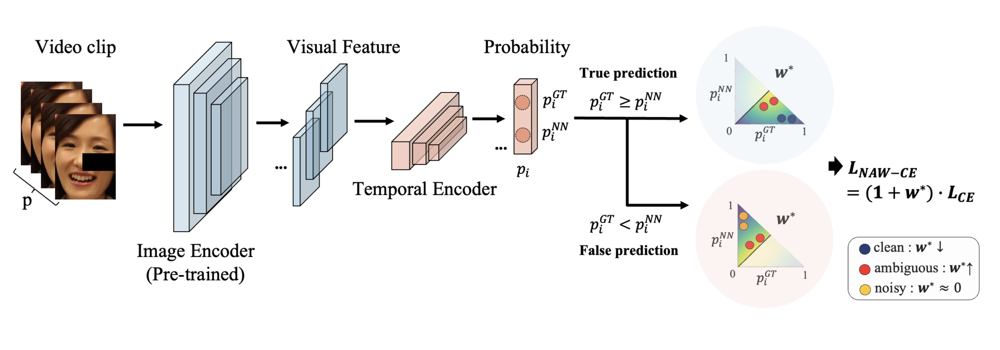

V-NAW carries the ambiguity-aware weighting of NLA from single images to video clips, and adds two augmentations that stop the model from memorising near-identical consecutive frames.
Facial Expression Recognition (FER) plays a crucial role in human affective analysis and has been widely applied in computer vision tasks such as human-computer interaction and psychological assessment. The 8th Affective Behavior Analysis in-the-Wild (ABAW) Challenge aims to assess human emotions using the video-based Aff-Wild2 dataset. This challenge includes various tasks, including the video-based EXPR recognition track, which is our primary focus. In this paper, we demonstrate that addressing label ambiguity and class imbalance, which are known to cause performance degradation, can lead to meaningful performance improvements. Specifically, we propose Video-based Noise-aware Adaptive Weighting (V-NAW), which adaptively assigns importance to each frame in a clip to address label ambiguity and effectively capture temporal variations in facial expressions. Furthermore, we introduce a simple and effective augmentation strategy to reduce redundancy between consecutive frames, which is a primary cause of overfitting. Through extensive experiments, we validate the effectiveness of our approach, demonstrating significant improvements in video-based FER performance.
A single frame is a noisy view of an expression: blinks, head turns and speech make frame-by-frame predictions flicker. V-NAW predicts at the clip level, averaging frame-wise probabilities over the clip. Below, the same frame-wise predictions are shown on their own and averaged over a 1.2-second window.
The image encoder is a Swin Transformer pre-trained with NLA on FERPlus, RAF-DB and AffectNet; a Transformer encoder then models the frame sequence of each 100-frame clip.

A random 20–40% of the frames in each clip is dropped, so the model cannot lean on long runs of almost identical frames.
The same 20% of pixels is masked in every frame of a clip, which keeps the model from over-relying on one facial region.
Frame-wise probabilities are averaged into a clip prediction, and NAW weights the loss by the ambiguity of the whole clip rather than of single frames.
Macro F1 (%) over the 8 expression classes on the official validation set. Vision only: no audio or text features.
| Aug | NAW | Neutral | Anger | Disgust | Fear | Happiness | Sadness | Surprise | Other | Avg. |
|---|---|---|---|---|---|---|---|---|---|---|
| 48.67 | 42.46 | 27.44 | 17.26 | 42.10 | 47.16 | 22.23 | 45.96 | 36.66 | ||
| ✓ | 52.56 | 42.11 | 26.66 | 17.93 | 43.73 | 48.99 | 24.25 | 47.64 | 37.98 | |
| ✓ | 50.12 | 45.67 | 34.89 | 19.78 | 45.02 | 50.13 | 29.10 | 47.34 | 40.26 | |
| ✓ | ✓ | 57.12 | 45.76 | 33.45 | 23.34 | 43.67 | 50.12 | 30.23 | 50.82 | 41.81 |
| Validation set | Neutral | Anger | Disgust | Fear | Happiness | Sadness | Surprise | Other | Avg. |
|---|---|---|---|---|---|---|---|---|---|
| Official | 57.12 | 45.76 | 33.45 | 23.34 | 43.67 | 50.12 | 30.23 | 50.82 | 41.81 |
| Fold 1 | 55.98 | 35.12 | 24.76 | 20.45 | 55.23 | 54.34 | 34.45 | 40.89 | 40.15 |
| Fold 2 | 50.34 | 41.89 | 23.45 | 22.76 | 47.12 | 52.98 | 32.78 | 42.22 | 39.19 |
| Fold 3 | 52.45 | 38.12 | 23.34 | 22.98 | 38.78 | 54.45 | 33.67 | 47.12 | 38.86 |
Folds use a 7:3 train/validation split of Aff-Wild2.
V-NAW extends NLA (AAAI 2025), which estimates how ambiguous each image is from the scores of the ground truth and its nearest negative, and re-weights the loss so ambiguous minority-class samples get more attention while noisy ones are suppressed.
@inproceedings{lee2025vnaw,
title = {V-NAW: Video-based Noise-aware Adaptive Weighting for Facial Expression Recognition},
author = {Lee, JunGyu and Lee, Kunyoung and Park, Haesol and Kim, Ig-Jae and Nam, Gi Pyo},
booktitle = {Proceedings of the IEEE/CVF Conference on Computer Vision and Pattern Recognition (CVPR) Workshops},
month = {June},
year = {2025},
pages = {5689--5696}
}